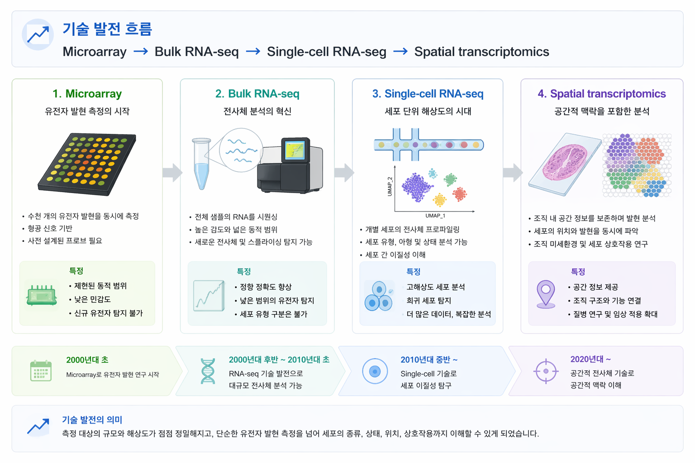
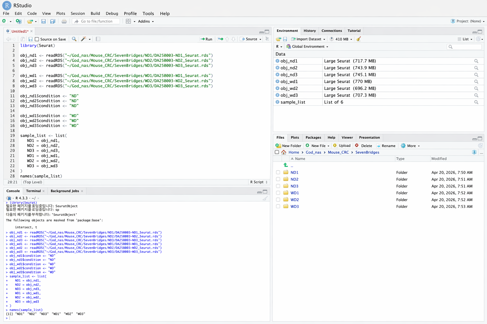

Introduction to scRNA-seq and Analysis Environment
Step 01 / 08본 실습에서는 mouse colorectal cancer single-cell RNA-seq 데이터를 사용하여 scRNA-seq의 기본 개념을 이해하고, 실제 분석 환경에서 데이터를 불러오는 방법까지 학습합니다.
A) Transcriptomics 기술의 발전
유전자 발현 분석 기술은 Microarray에서 시작하여 Bulk RNA-seq, 그리고 Single-cell RNA-seq을 거쳐 최근에는 Spatial transcriptomics로 발전해 왔습니다. 이러한 발전은 분석 해상도를 점점 세포 수준, 나아가 공간 수준까지 확장시켰습니다.
초기의 Microarray는 미리 설계된 probe를 이용해 유전자 발현을 측정하는 방식이었고, 이후 Bulk RNA-seq은 sequencing 기반으로 더 넓은 transcriptome을 보다 정확하게 측정할 수 있게 했습니다. 그러나 bulk RNA-seq는 샘플을 구성하는 모든 세포의 평균값을 반영하기 때문에, 세포 간 차이와 희귀 세포 집단을 직접 구분하기 어렵다는 한계를 가졌습니다.
이러한 제한을 극복하기 위해 등장한 것이 Single-cell RNA-seq (scRNA-seq)입니다. scRNA-seq는 개별 세포 단위에서 유전자 발현을 측정할 수 있어, 동일한 조직 안에서도 서로 다른 세포 유형과 상태를 분리하여 해석할 수 있습니다. 최근에는 여기에 위치 정보를 더한 Spatial transcriptomics가 발전하면서, 발현 정보와 조직 내 공간적 맥락을 함께 이해할 수 있는 방향으로 확장되고 있습니다.

Microarray → Bulk RNA-seq → Single-cell RNA-seq → Spatial transcriptomics로 이어지는 기술 발전 흐름
기술 발전 흐름 요약
B) Bulk RNA-seq와 Single-cell RNA-seq의 차이
Bulk RNA-seq는 조직 또는 샘플 전체에서 RNA를 추출하여 분석하기 때문에, 측정된 발현값은 여러 세포의 평균값을 의미합니다. 따라서 샘플 안에 서로 다른 세포 집단이 혼재되어 있는 경우, 어떤 세포가 어떤 유전자를 발현하는지 직접적으로 구분하기 어렵습니다.
반면, Single-cell RNA-seq는 각 세포를 독립적으로 측정하므로 세포 간 이질성(heterogeneity)을 직접 분석할 수 있습니다. 이를 통해 기존에는 하나의 집단처럼 보였던 조직이 실제로는 다양한 세포 유형과 서로 다른 상태(state)의 세포들로 구성되어 있음을 확인할 수 있습니다.
특히 종양 조직에서는 종양세포, 면역세포, 섬유아세포, 내피세포 등이 함께 존재하므로, scRNA-seq는 종양 미세환경을 정밀하게 해석하는 데 매우 유용합니다.
| 항목 | Bulk RNA-seq | Single-cell RNA-seq |
|---|---|---|
| 단위 | 샘플 전체 | 개별 세포 |
| 특징 | 평균 발현 | 세포 간 이질성 분석 |
| 결과 | gene × sample matrix | gene × cell matrix |

Bulk RNA-seq는 샘플 평균 발현을 측정하고, scRNA-seq는 개별 세포 단위 발현을 분석합니다.
C) scRNA-seq 핵심 개념
scRNA-seq 데이터는 일반적인 bulk RNA-seq와 다른 구조를 가지며, 몇 가지 핵심 개념을 이해하는 것이 중요합니다.
먼저, 각 세포에는 barcode가 부여되어 어떤 read가 어떤 세포에서 유래했는지를 구분할 수 있습니다. 또한 UMI (Unique Molecular Identifier)는 PCR 과정에서 생길 수 있는 중복을 보정하기 위해 사용되며, 실제 분자 수를 보다 정확하게 반영하는 데 도움을 줍니다.
이렇게 생성된 데이터는 보통 gene × cell 형태의 count matrix로 정리됩니다. 여기서 각 값은 특정 유전자가 특정 세포에서 얼마나 관찰되었는지를 의미합니다.
scRNA-seq 데이터의 또 하나의 특징은 sparsity입니다. 이는 많은 유전자들이 많은 세포에서 0으로 기록되는 현상으로, 기술적 제한과 biological 특성이 함께 반영된 결과입니다.
핵심 개념 요약
- Barcode: 세포 식별자
- UMI: PCR bias 완화
- Count matrix: gene × cell 구조
- Sparsity: 많은 0 값이 존재하는 데이터 특성
D) 실습 데이터 개요
본 실습에서는 총 6개의 mouse colorectal cancer scRNA-seq 샘플을 사용합니다. 샘플은 식이 조건에 따라 두 그룹으로 나뉩니다.
- ND1, ND2, ND3: Normal diet 대장암 마우스 샘플
- WD1, WD2, WD3: Western diet 대장암 마우스 샘플
즉, 본 튜토리얼은 단일 샘플 분석뿐 아니라, 이후 단계에서 여러 샘플을 비교하고 통합(integration)하는 흐름까지 실습할 수 있도록 구성되어 있습니다.
E) 분석 환경: RStudio Server
본 실습은 로컬 PC에서 직접 계산하지 않고, 리눅스 서버 기반의 RStudio Server 환경에서 수행합니다.
http://server_ip:8787
웹 브라우저에서 위 주소로 접속한 뒤, 제공된 ID와 Password를 입력하여 로그인합니다.

로컬 PC의 웹브라우저를 통해 서버에 접속하고, RStudio Server 환경에서 분석을 수행합니다.
F) NAS 데이터 저장소 접근
실습 데이터는 NAS(Network Attached Storage)에 저장되어 있으며, 분석용 서버에서 해당 NAS가 원격 마운트(remote mount)된 상태여야 접근할 수 있습니다.
중요
- 사용자는 웹브라우저로 서버에 접속하지만, 실제 데이터는 NAS에 저장되어 있습니다.
- 따라서 서버에서 NAS 경로가 정상적으로 마운트되어 있어야 파일을 읽을 수 있습니다.
- 대용량 scRNA-seq 데이터는 로컬 PC가 아니라 서버/NAS에서 직접 처리하는 것이 일반적입니다.
~/God_nas/Mouse_CRC/
G) 데이터 폴더 구조
single-cell 데이터를 전달받으면 일반적으로 원시 데이터와 분석 결과가 분리되어 제공됩니다.
Mouse_CRC/
├── Raw_data/
└── SevenBridges/
- Raw_data/: FASTQ 등 원시 데이터
- SevenBridges/: 분석 결과, report, Seurat object 등 downstream 분석용 파일
H) 실제 분석에 사용하는 파일
본 실습에서는 SevenBridges 폴더 아래에 있는 전처리된 Seurat object (.rds) 파일을 사용합니다. 예를 들어 ND1 샘플은 아래와 같은 경로에 위치할 수 있습니다.
~/God_nas/Mouse_CRC/SevenBridges/ND1/DA250003-ND1_Seurat.rds
동일한 방식으로 ND2, ND3, WD1, WD2, WD3 샘플도 각각 대응되는 폴더 아래에 저장되어 있다고 가정합니다.
I) 작업 디렉토리 설정
실습을 시작하기 전에 현재 작업 경로를 확인하고, 기본 실습 폴더로 이동합니다.
getwd()
setwd("~/God_nas/Mouse_CRC")
getwd()
list.files()
J) Seurat object 불러오기
아래 예시는 6개 샘플을 모두 불러오고, 각 샘플에 식이 조건 정보를 metadata로 추가한 뒤
sample_list를 만드는 코드입니다.
library(Seurat)
obj_nd1 <- readRDS("~/God_nas/Mouse_CRC/SevenBridges/ND1/DA250003-ND1_Seurat.rds")
obj_nd2 <- readRDS("~/God_nas/Mouse_CRC/SevenBridges/ND2/DA250003-ND2_Seurat.rds")
obj_nd3 <- readRDS("~/God_nas/Mouse_CRC/SevenBridges/ND3/DA250003-ND3_Seurat.rds")
obj_wd1 <- readRDS("~/God_nas/Mouse_CRC/SevenBridges/WD1/DA250003-WD1_Seurat.rds")
obj_wd2 <- readRDS("~/God_nas/Mouse_CRC/SevenBridges/WD2/DA250003-WD2_Seurat.rds")
obj_wd3 <- readRDS("~/God_nas/Mouse_CRC/SevenBridges/WD3/DA250003-WD3_Seurat.rds")
obj_nd1$condition <- "ND"
obj_nd2$condition <- "ND"
obj_nd3$condition <- "ND"
obj_wd1$condition <- "WD"
obj_wd2$condition <- "WD"
obj_wd3$condition <- "WD"
sample_list <- list(
ND1 = obj_nd1,
ND2 = obj_nd2,
ND3 = obj_nd3,
WD1 = obj_wd1,
WD2 = obj_wd2,
WD3 = obj_wd3
)
names(sample_list)
K) Expected output
아래는 6개 샘플( ND1~3, WD1~3 )을 불러오고, condition metadata를 추가한 뒤
sample_list를 생성했을 때의 예시 화면입니다.
Environment 창에서 각 샘플 object와 6개 element를 가진 list가 정상적으로 보이면
다음 단계로 진행할 수 있습니다.

Example result after loading ND1–3 and WD1–3 Seurat objects and creating sample_list.
- Environment 창에
obj_nd1~obj_wd3가 보여야 합니다. sample_list는 6개 element를 가진 list여야 합니다.names(sample_list)결과는 ND1, ND2, ND3, WD1, WD2, WD3 순서로 확인됩니다.
- A)~C)는 scRNA-seq의 개념과 기술 발전 흐름을 설명하는 이론 파트입니다.
- D)부터는 실제 실습을 위한 환경 및 데이터 설명입니다.
- 본 실습 데이터는 총 6개 샘플이며, ND1~3은 Normal diet, WD1~3은 Western diet 대장암 마우스 샘플입니다.
- 분석은 RStudio Server 환경에서 수행하며, 데이터는 NAS가 서버에 원격 마운트된 상태에서 접근합니다.
- 실제 분석에는 SevenBridges 폴더 아래의 Seurat object(.rds) 파일을 사용합니다.